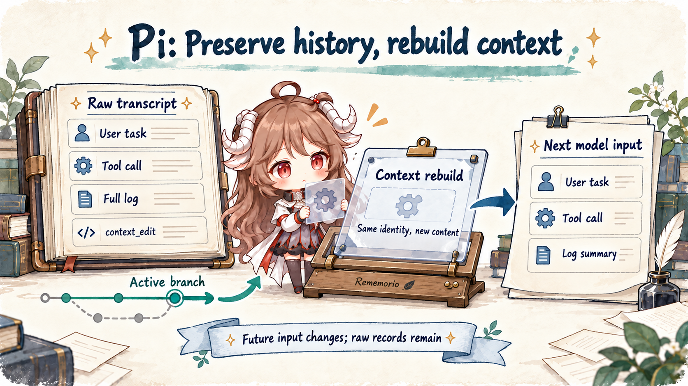
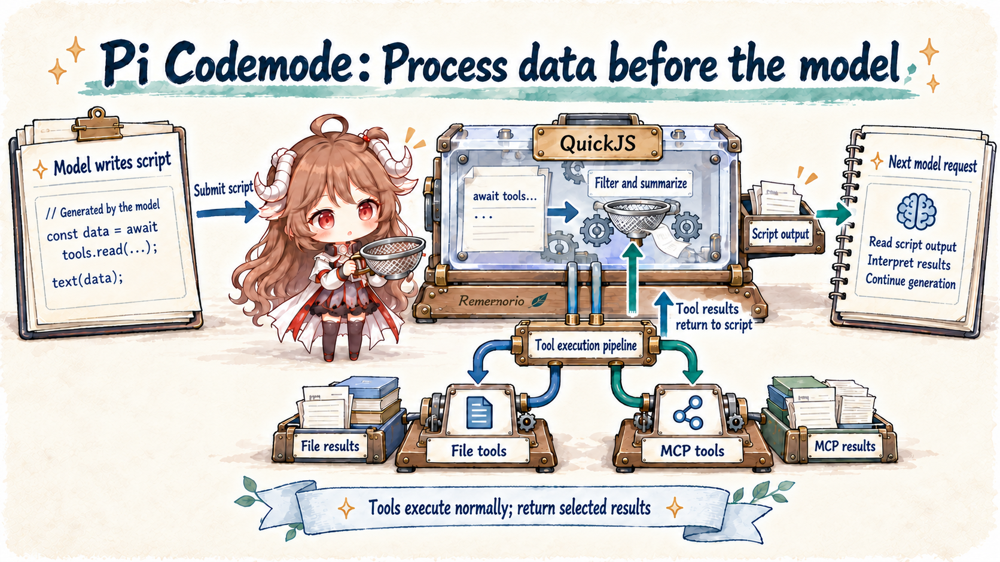

Pi Agent Source Notes · Three chapters
How Pi runs tasks, preserves history, and processes tool data
Give Pi a code change and a test run, then follow the same data through three chapters: models and tools execute the task, a long log becomes reconstructable session history, and a script filters three test reports.
Reading order: Start with the runtime map of models, the loop, tools, and sessions. Then trace history into the next request, and finally process tool data before it reaches the model.

Reading route
From a code change to what the next model request actually contains
Each chapter follows data left by the same change and test run, examining execution, preservation, and filtering in turn.
Pi Agent Source Notes · Part 1Why Pi Treats a Coding Agent as an Extensible HarnessFollow Pi 1.0 through the model loop, context reconstruction, session tree, and compaction, then see how the core works with built-in MCP, Codemode, and replaceable extensions.
Read Part 1 →
Pi Agent Source Notes · Part 2How Pi preserves history while changing the next contextFollow one test log through session branches, append-only content edits, request reconstruction, compaction, and extension continuation: what remains for the user and what reaches the next model request.
Read Part 2 →
Pi Agent Source Notes · Part 3Pi Codemode: many tools, large results, smaller model inputFollow a test-report query through JavaScript orchestration, MCP discovery, nested tool calls, and failure state: process data before asking the model to judge it.
Read Part 3 →